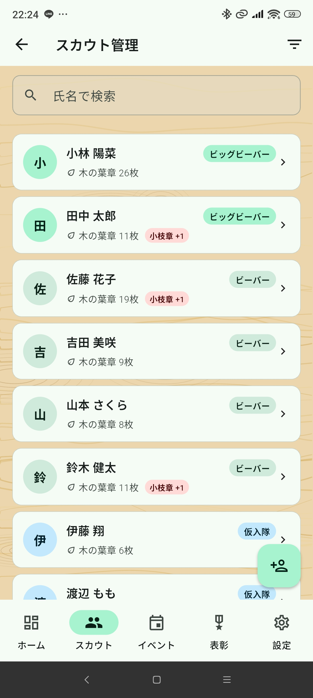
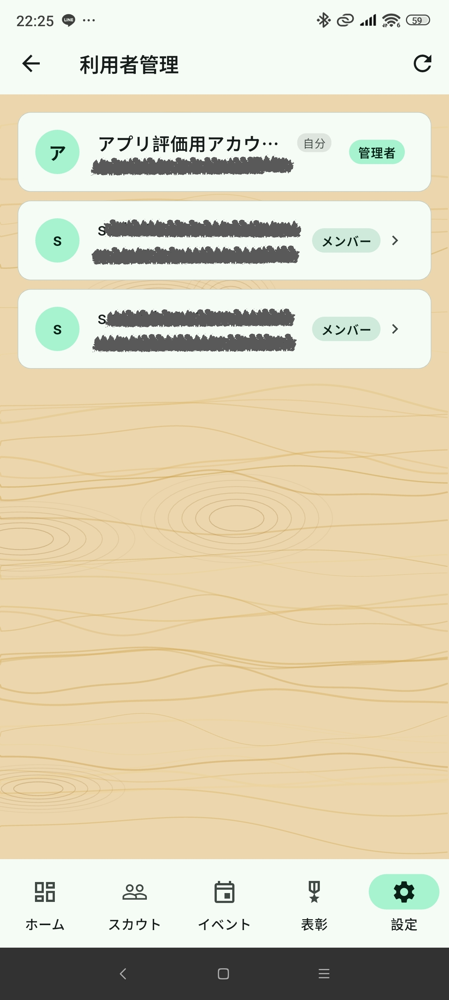

概要
管理者（admin）は各団に必ず一人存在しており、ビーバーログの全機能を利用できます。スカウト・イベント・表彰の管理に加え、アプリユーザーの管理や招待コードの発行など、他のロールにはない操作が可能です。
| ロール | できること |
|---|---|
| 管理者（admin） | 全操作＋利用者管理・招待コード発行 |
| メンバー（member） | スカウト・イベント・表彰の登録・編集 |
| 制限（limited） | 閲覧・出欠入力のみ |
現在のロールは設定画面の上部に表示されます。
ホーム（ダッシュボード）
アプリ起動時に表示されるトップ画面です。

表示内容
- 今月のイベント数・スカウト数・平均出席率・小枝章授与待ち数
- 直近2ヶ月のイベント一覧（日付・タイトル・場所・開始時間・ステータス）
- 小枝章授与待ちのスカウトがいる場合はカードで通知
- 今月誕生日のスカウト（氏名・日付・年齢）
イベントを追加する
画面右下の ＋ボタン（FAB） をタップしてイベント作成画面へ移動できます。
スカウト管理

一覧・検索
- 氏名検索・分類フィルタで絞り込みができます
- 一覧には氏名・分類・木の葉章枚数・小枝章授与待ちが表示されます
スカウトを追加する
- 右下の ＋ボタン をタップ
- 氏・名（両方必須）、性別、学年、誕生日、アレルギー、特記事項を入力
- 右上の 保存アイコン をタップして保存
スカウトを編集・削除する
スカウト詳細画面から編集・削除ができます。
スカウト分類
| 分類 | デフォルト出席 | 小枝章対象 |
|---|---|---|
| ビッグビーバー | ○ | ○ |
| ビーバー | ○ | ○ |
| 仮入隊 | ○ | × |
| 体験 | ○ | × |
| 兄弟姉妹 | ○ | × |
| 上進・退団・入隊せず | × | × |
保護者の紐付け
スカウト詳細画面の「保護者」セクションから保護者を紐付け・解除できます。紐付けられた保護者はイベントの出席者追加時に候補として表示されます。
イベント管理

一覧
年度（4月始まり）ドロップダウンとステータスフィルタで絞り込みができます。「実施N件・予定N件・非開催N件」のサマリーが表示されます。
イベントを追加する
- 右下の ＋ボタン をタップ（ダッシュボードまたはイベント一覧から）
- タイトル・開催日・開始時間・終了時間・場所・備考・活動計画書URLを入力
- 右上の 保存アイコン をタップして保存
イベント詳細・出欠管理

イベントカードをタップすると詳細画面が開きます。
- ステータス：「予定」「確定」「非開催」の3ボタンで切り替え
- 活動計画書URL：登録済みの場合はリンクとして表示され、タップで外部ブラウザで開きます
- 木の葉章配布設定：健康・表現・生活・自然・社会の5種別をON/OFFで設定
- 出欠管理：リーダー・スカウト・その他セクションで出席（✓）・欠席（×）・未定（—）をトグル
- 出席者追加：右下のFABからリーダー・スカウト・保護者・団委員ほかの4タブで追加
イベントを「確定」にする
- ステータスを「確定」に変更
- 確認ダイアログが表示されるので「OK」
- 出席スカウト全員に木の葉章が自動加算されます（ONの種別数分）
- 10枚単位で小枝章の権利が発生します
ステータスについて
| ステータス | 説明 |
|---|---|
| 予定 | デフォルト。編集可能 |
| 確定 | 木の葉章を反映済み。編集不可 |
| 非開催 | 木の葉章に影響なし。確定済みからは変更不可 |
表彰管理

表彰タブは4つのサブタブで構成されます。
入隊タブ
ビーバー・ビッグビーバーで入隊日が未入力のスカウトを表示します。スカウト詳細から入隊日を入力してください。
小枝章タブ
木の葉章10枚ごとに小枝章の権利が発生します。授与待ちのスカウトが一覧表示されます。
- 対象スカウトの「授与」ボタンをタップ
- 確認ダイアログで「OK」
- 授与済みに更新されます
木の葉章タブ
デフォルト出席対象スカウトを木の葉章合計枚数の降順で表示します。10枚ごとのプログレスバーで進捗を確認できます。
皆勤賞タブ
年度（4月〜翌3月）内の確定済みイベント全てに出席したビーバー・ビッグビーバーを表示します。年度ドロップダウンで過去5年度まで切り替えられます。
設定
設定画面の上部に団名・ログインユーザー名・ロールバッジが表示されます。ログアウトは右上のアイコンボタンから行います。
団情報
団名・場所・連絡先を編集できます。右上の保存アイコンで保存してください。
リーダー管理
- リーダーの追加・編集・削除
- 引退フラグを編集画面のスイッチで切り替え可能
- 出欠履歴があるリーダーは削除不可
保護者管理
- 保護者の追加・編集・削除
- スカウトと紐付いている、または出欠履歴がある場合は削除不可
団委員ほか管理
- 団委員・その他の追加・編集・削除
- 引退フラグの切り替え可能
- 出欠履歴がある場合は削除不可
電話帳
リーダー・保護者・団委員ほか全員を名前順で一覧表示。電話・メールボタンでアプリを起動できます。
アレルギー情報
アレルギーのあるスカウト全員のサマリーを表示します。
管理者専用機能
利用者管理

同じ団のアプリユーザー一覧を表示します。メンバー行をタップするとポップアップが表示されます。
- 管理者にする：対象を管理者に昇格。自分はメンバーに降格してログアウトします
- 退会させる：対象ユーザーを団から削除します
招待コード

新しいメンバーをアプリに招待するためのコードを発行します。
- 右下のFABから新規発行（6桁英数字・7日間有効・使い捨て）
- コードは使用済み・未使用・期限切れの状態が一覧で確認できます
- 使用済みの場合は使用者名が表示されます
アカウント削除
管理者は直接アカウントを削除できません。以下の手順が必要です。
- 設定画面の「アカウントを削除する」をタップ
- ダイアログの案内に従い「団全員を強制退会」を10秒長押し
- 「実行」を10秒長押しで団の全データが削除されログアウト